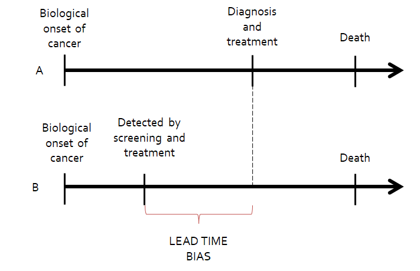

2.4 Detección del VPH en lesiones precancerosas
La prevalencia del VPH aumenta con el aumento de la gravedad de las lesiones, desde alrededor del 12 % de las mujeres con citología normal hasta el 50-70 % de las mujeres con lesiones de bajo grado, el 70-90 % de las mujeres con lesiones precancerosas de alto grado y prácticamente todos los casos de cáncer de cuello uterino.

FIGURA 5 Prevalencia del VPH en las diferentes etapas del desarrollo del cáncer de cuello uterino.
El VPH es la causa necesaria de los dos principales subtipos histológicos de cáncer de cuello uterino, es decir, que las mujeres nunca infectadas por el VPH nunca desarrollarán cáncer. Por lo tanto, la falta de detección del VPH en algunos casos de cáncer de cuello uterino cuestiona esta afirmación, pero se sospecha que la negatividad del VPH se relaciona con la calidad de las muestras y la sensibilidad de las pruebas utilizadas para su detección.
Ejemplo
Un estudio reciente realizado en Suecia (Arroyo Mühr et al. 2020), tras la redeterminación del VPH con un método de mayor sensibilidad, detectó VPH en 169 de 392 muestras de cáncer de cuello uterino en las que no se había detectado el VPH anteriormente.
La distribución de los tipos de VPH en las mujeres con lesiones precancerosas varía en función de la gravedad de la lesión debido a las diferencias de persistencia y carcinogenicidad entre los tipos de VPH:
En lesiones de grado bajo, la distribución de los tipos de VPH es muy similar a la observada en mujeres con citología normal.
En lesiones de gran malignidad, la proporción de virus de alto riesgo aumenta, siendo el VPH 16 el más detectado, seguido de los tipos de VPH 18, 31, 33, 35, 45, 52 y 58, en una distribución similar a la observada en el cáncer de cuello uterino.

FIGURA 6 Distribución de la prevalencia específica del tipo de VPH en el cuello uterino normal positivo y en las lesiones precancerosas (Guan et al. 2012).
En el cáncer de cuello uterino, los tres virus más frecuentes son los tipos de VPH 16, 18 y 45, aunque en diferente proporción según el subtipo histológico.
